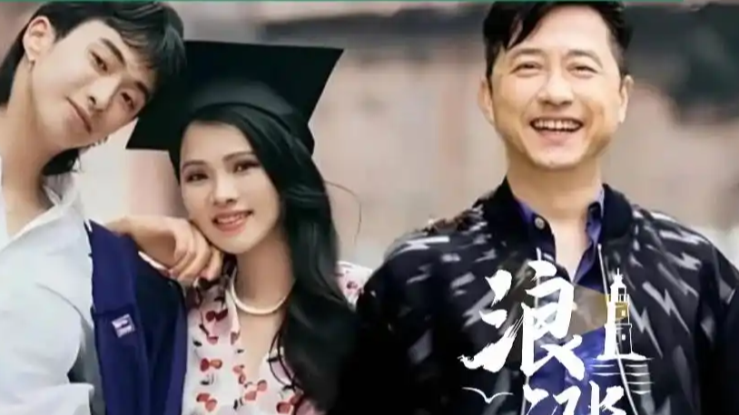

近日，庾澄庆在单曲《枝仔冰》记者会上被问及一家三口同框，他果断回应"没有"，并透露已邀请儿子恩利担任演唱会嘉宾。此前9月，恩利曾直言父母同台"不可能"。
两人于2000年结婚、2009年离婚，儿子监护权归庾澄庆。多年过去，这段关系早已被时间拉出距离，记者会上这一句"没有"，没有遮掩，也不刻意。
不演"和谐全家福"，反而是一种诚实。
所以最体面的回应，未必是"在一起"，而是"说清楚"。
表层看，是旧日恩怨未消；但更深一层，是离婚之后自然形成的边界感——两个成年人选择了各自的生活路径，强凑同框既无必要，也未必舒服。
值得肯定的是，双方都把分歧留给了自己，把空间留给了孩子：恩利在父母各自的世界里长大，而父母也用"不消耗彼此"的方式，守住了为人父母的分寸。
体面，有时就是保持距离。
体面不是同框，是互不消耗。
从文娱生态看，离异明星家庭的"同框"常被流量放大成公共议题，但家庭终究是私域。媒体与网友少一点"催同框"的窥探，多一点对边界的尊重，对当事人是一种保护。
对公众人物而言，坦诚自己的生活方式，比迎合大众对"破镜重圆"的想象更难得；对观众来说，把祝福留在心里，让他们各自安好，或许是最得体的姿态。
少一点围观，多一点体面。
最好的祝福，是让他们各自安好。
回到记者会那句"没有"：没有勉强，没有表演，只是如实作答。
成年人的关系里，最难也最珍贵的，是承认"我们已不同路"，却仍愿意为孩子保留善意。庾澄庆与伊能静的故事，给围观者提了个醒——有些家庭的圆满，不在于同框，而在于每个人都被允许过自己的人生。愿我们都能学会，在别人的生活里，得体地退后一步。